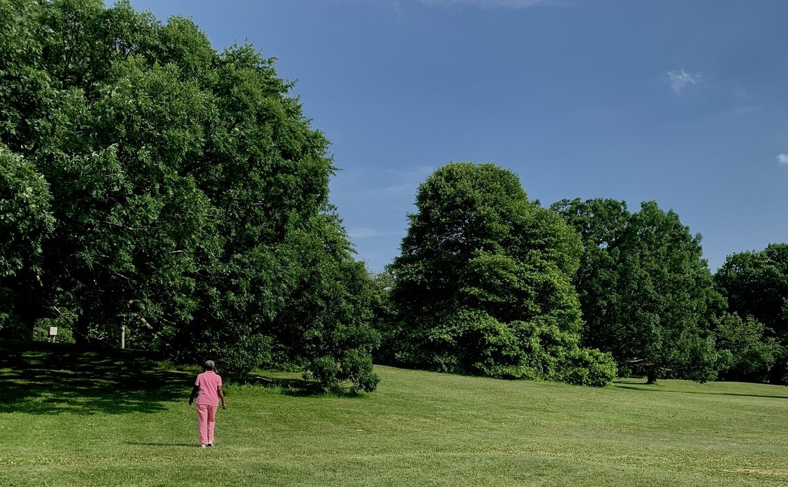

<!--
  Component: home-photo
  Source:    custom
  Notes:     A photo that runs edge to edge across the page and keeps its own shape (never
             cropped); it scales down on small screens. Plain HTML and CSS, no JavaScript.
             In Streamlit the full width comes from .c-photo--bleed (width 100vw, pulled out of
             the content column).
  Hooks:     id="c-home-photo", .c-photo__img
  Tokens:    layout.photo-gap (space above and below)
-->
<style>
  .c-photo {
    --layout-photo-gap: clamp(16px, 4vh, 48px);

    margin: var(--layout-photo-gap) 0;
    padding: 0;
  }

  .c-photo--bleed {
    width: 100vw;
    margin-left: calc(50% - 50vw);
  }

  .c-photo__img {
    display: block;
    width: 100%;
    height: auto;
  }
</style>

<figure class="c-photo c-photo--bleed" id="c-home-photo" data-source="custom">
  
</figure>
